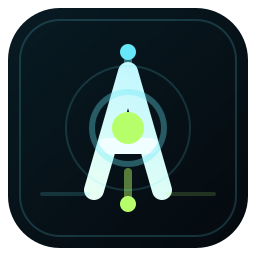
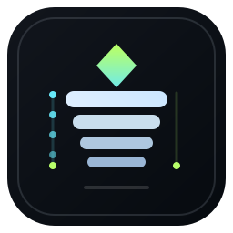
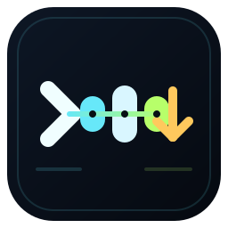

Runtime Core
围绕“运行中的本地 agent 核心”做图形。中心是 core，两端是执行链路锚点，整体更像控制核心而不是普通字母 logo。
对应项目气质：运行、验证、继续执行、系统控制感。
回复我：1
这次不是泛 AI 科技图标，而是从这个 agent 项目的真实内核出发来做。你项目最特别的不是“会聊天”，而是 tool-call 主链、本地执行、L1-L8 分层记忆和运行中的控制感。所以这轮只做 3 个真正贴项目的方向。

围绕“运行中的本地 agent 核心”做图形。中心是 core，两端是执行链路锚点，整体更像控制核心而不是普通字母 logo。

直接从 L1-L8 分层记忆的概念出发。更强调沉淀、堆叠、结晶和演化，辨识点是“这不是普通对话产品”。

从主链逻辑出发，把“决策 - 调用 - 回流 - 输出”压成一个可识别的链式图标，最像 agent 系统而不是 AI 助手。